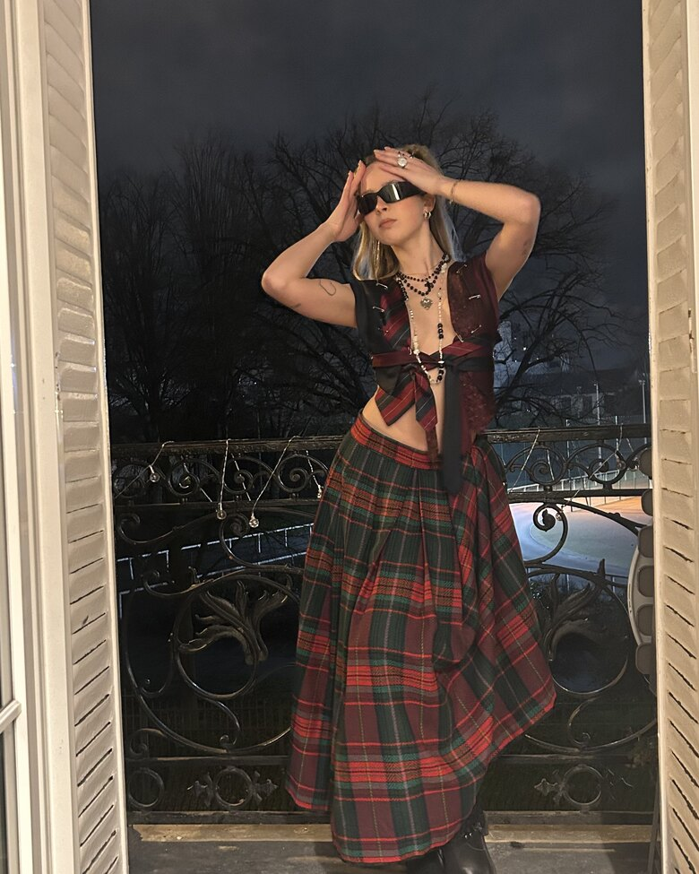
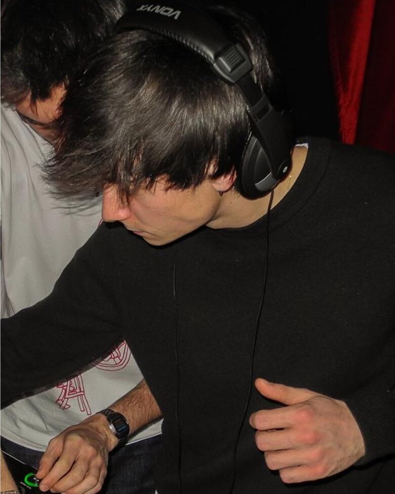

The roster
Two founders, one family of DJs. From French touch to techno, brought up on Paris nights.

Co-president · Co-founder
Franco-Spanish, she lives for the electronic scene — an Ed Banger superfan (the logo is tattooed), moving between French touch, electro, brat-pop and attitude. The team's Swiss army knife, always backstage, now stepping behind the decks. She backs MGBD, pushing women forward in DJing.

Co-president · Co-founder
Born and raised in Paris, Valentin chases one thing: connection through rhythm and energy. Powerful, hypnotic sounds between electronic nostalgia and contemporary punch — Daft Punk, Tiësto, Kettama.
The duo of Alexis & Adok — French house, speed garage and 2000s electroclash.
Paris-based, rooted in Benin. A sonic encyclopaedia whose sets become powerful stories.
22, between Paris and Madrid. House, electro and disco with Brazilian and Latin colours.
From rock roots to dark/italo disco and progressive house. Founder of Groover Obsessions, producing since 2025.
Benjamin, 22. Co-founder of Rennes collective Youthdream, a tireless digger spreading the passion.
From electroclash to French touch, an Ed Banger heir. Versatile, from house to Brazilian funk.
Some social links are placeholders to verify with each artist before launch.